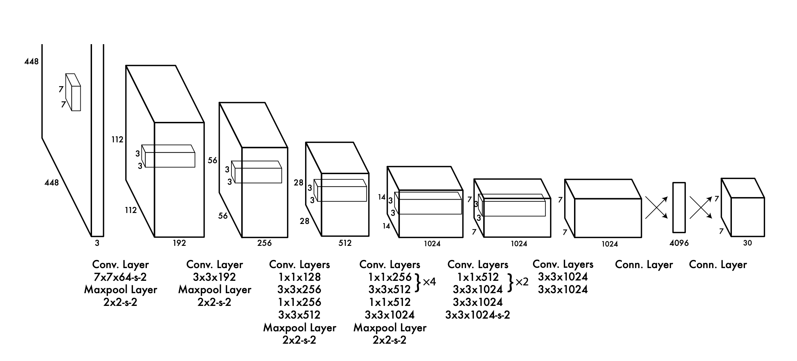
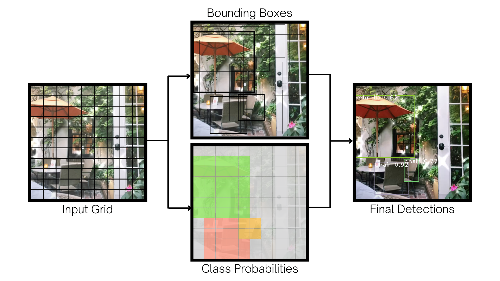

Project
⭐ Machine Learning-Powered Video Library
By Czarina Luna
Video sharing applications today lack the functionality for users to search videos by their content. As a solution I developed a searchable video library that processes videos and returns exact matches to queries using machine learning and artificial intelligence including speech recognition, optical character recognition, and object detection.
Business Problem
Applications for video sharing and storage may be able to enhance user experience by allowing users to search for videos by their content, such as specific words or objects in the video. One of the most popular video sharing apps right now is TikTok where users can save the videos they like to their profile but yet cannot search through the liked videos.
As it lacks that functionality, its millions of users are forced to scroll through every single video they have ever liked to find one single clip, and over again. To address this problem, I create a library of TikTok videos and build a search engine that breaks down the videos into several features and returns exact matches to any given query.
Data and Methodology
A sample of 140 videos are provided in the videos folder of this repository for the purpose of demonstrating the end-to-end process I performed. This set of sample is originally saved from my personal user account, and in addition, I downloaded two datasets each containing 1000 videos from Kaggle (found here and here). Altogether I analyzed over 2000 videos for the whole project, which I uploaded on Google Drive. You may download all the videos to explore the complete dataset.
Multimedia Data
A video is a complex data type that can be broken down in a lot of different ways. Through feature engineering, I turned the raw videos into multiple data features that I extracted using the following approaches:
- Converting the video to audio and transcribing the speech
- Breaking down the video as a sequence of images or frames
- Recognizing on-screen text in the video frames
- Detecting image objects in the video frames
Data Processing
- Audio processing using
moviepy,pydub, andspeech_recognition - Optical character recognition using
opencv-python,PIL, andpytesseract - Object detection using
opencv-pythonandYOLOv3algorithm
Using the above packages and models, the features are extracted as text and so I applied Natural Language Processing (NLP) to process the text and to create a corpus of all the words to search through. Lastly, I built the search engine using BM25 and deployed the full app via Streamlit.
Video Processing
I. Audio Processing
The first feature to extract from the videos is audio. Audio processing is the fastest part in the full process of feature engineering.
- To create the audio file, the video formatted as mov or mp4 is converted to a wav file.
- The audio file is sliced into smaller chunks of audio, split by silence of 500 milliseconds or more, for faster processing.
- To recognize the contents, I create an instance of the
Recognizerclass and call the methodrecognize_google. - The full transcription is stored in a text file, which is returned by the function I define as
transcribe_audio.
Code
def transcribe_audio(file_path):
'''
Converts video to audio and returns audio transcription.
Parameters:
file_path (str): file path of video to be transcribed.
Returns:
full_text (str): full text transcription of video's audio.
'''
# Write the audio file from the video using MoviePy
# to convert the MP4 or MOV video format to a wav file
transcribed_audio_file = './data/audio/transcribed_audio.wav'
audioclip = AudioFileClip(file_path)
audioclip.write_audiofile(transcribed_audio_file)
try:
sound = AudioSegment.from_file(file_path, 'mp3')
except:
sound = AudioSegment.from_file(file_path, format='mp4')
# Split the wav file into chunks where there is silence
# for 500 milliseconds or more using PyDub
chunks = split_on_silence(sound, min_silence_len = 500,
silence_thresh = sound.dBFS-14, keep_silence=500)
# Create a folder called audio_chunks to save the chunks of wav files
folder_name = './data/audio/audio_chunks'
if not os.path.isdir(folder_name):
os.mkdir(folder_name)
full_text = ''
# Create an instance of the Recognizer class from SpeechRecognition
r = sr.Recognizer()
# Call the method that uses Google Speech Recognition API
# to transcribe the audio and return a string of text
for i, audio_chunk in enumerate(chunks, start=1):
chunk_filename = os.path.join(folder_name, f'chunk{i}.wav')
audio_chunk.export(chunk_filename, format='wav')
with sr.AudioFile(chunk_filename) as source:
audio_listened = r.record(source)
try:
text = r.recognize_google(audio_listened)
except sr.UnknownValueError as e:
print('Error:', str(e))
else:
text = f'{text.capitalize()}.'
print(chunk_filename, ':', text)
full_text += text
return full_text
II. Extracting Visual Text
The other features to extract from the videos are visual content. Extracting visual text is a faster process than extracting the visual objects.
- To create the sequence of images, the video is broken down into frames by
VideoCapturein the function I define assave_frames. - The images are captured every nth frame and then opened with the python imaging library.
- To recognize the text, the image frames are passed onto the method
image_to_string. - The extracted text is returned by the function I define as
extract_visual_textand processed later using NLP.
Code
image_frames = './data/images/image_frames'
def save_frames(file_path):
'''
Creates image folder and saves video frames in the folder.
Parameters:
file_path (str): file path of video to be captured as images.
Returns:
image_frames folder where the video frames are stored.
'''
try:
os.remove(image_frames)
except OSError:
pass
# Create a folder called image_frames to save the images or frames of the video
if not os.path.exists(image_frames):
os.makedirs(image_frames)
# Capture every 20th frame of the video using cv2 from OpenCV and save to folder
src_vid = cv2.VideoCapture(file_path)
index = 0
while src_vid.isOpened():
ret, frame = src_vid.read()
if not ret:
break
name = './data/images/image_frames/frame' + str(index) + '.png'
if index % 20 == 0:
print('Extracting frames...' + name)
cv2.imwrite(name, frame)
index = index + 1
if cv2.waitKey(10) & 0xFF == ord('q'):
break
src_vid.release()
cv2.destroyAllWindows()
def extract_visual_text(file_path):
'''
Extracts visual text from images saved of video frames.
Parameters:
file_path (str): file path of video from which to extract the visual text.
Returns:
full_text (str): text as seen in the video taken from every 20th frame.
'''
save_frames(file_path)
print('Folder created.')
text_list = []
# Sort the frames in the folder using the function above for correct ordering
image_list = sorted_alphanumeric(os.listdir(image_frames))
# Open each image frame using PIL, and pass as argument in a function that uses
# Google Tesseract OCR to recognize text in the image
for i in image_list:
print(str(i))
single_frame = Image.open(image_frames + '/' + i)
text = pytesseract.image_to_string(single_frame, lang='eng')
text_list.append(text)
# Remove the new line character `\n` and the word TikTok
# from the strings of text returned and joined together
full_text = ' '.join([i for i in text_list])
full_text = full_text.replace('\n', '').replace('\x0c', '').replace('TikTok', '')
# Remove the folder to erase the image frames of the video
shutil.rmtree('./data/images/image_frames/')
print('Folder removed.')
return full_text
To extract the username from the visual text, I define the function extract_username that executes the following steps:
- Create a list of all words in the string of words lowercased.
- Create another list of the strings that start with the sign ‘@’.
- Return the most frequent word in the list using the function
most_frequent.
The most frequent word is most likely the username because TikTok automatically displays it for the full duration of the video, as in every single video frame.
Code
def most_frequent(username_list):
'''Takes in a list of strings and return the most frequent word in the list or none.'''
most_frequent = max(set(username_list), key = username_list.count)
if most_frequent == '':
return np.nan
else:
return most_frequent
def extract_username(visual_text):
'''
Lists possible usernames from visual text and returns the most frequent one that may most likely be the username.
Parameters:
visual_text (str): full visual text extracted from video.
Returns:
username (str): most frequent word that starts with @ sign; if none, returns none.
'''
visual_text = ''.join([i for i in visual_text.lower() if not i.isdigit()])
text = ' '.join(visual_text.split())
text_list = [word for word in text.lower().split()]
username_list = []
for word in text_list:
if re.search(r'[@]', word):
username_list.extend([word.rsplit('@')[-1]])
if username_list == []:
return np.nan
else:
username_list = ' '.join([username for username in username_list])
username_list = [username for username in username_list.strip().split()]
try:
return most_frequent(username_list)
except:
return ' '.join(username_list)
III. Detecting Image Object
The final feature to extract are objects in the videos, which is accomplished by the state-of-the-art object detection system YOLO that uses a deep learning algorithm.
Deep Learning
YOLO applies a convolutional neural network with this network architecture. 
Image Source: https://arxiv.org/pdf/1506.02640.pdf
Compared to prior object detection systems YOLO uses a totally different approach—the network looks at the image once. Thus, the name You Only Look Once.
- The input image is divided into a grid of x by x number of cells.
- Around the cells, bounding boxes are predicted with confidence scores.
- Class probabilities are mapped, with the bounding boxes weighted by the predictions.
- The output of objects detected are displayed if the threshold set is met.
An example frame to illustrate:

Transfer Learning
The weights from the YOLO pre-trained network model are adapted to our data. To load the network model, download the weight and configuration files from Darknet. The configuration file describes the layout of the network by block.
“YOLOv3 is extremely fast and accurate. In mAP measured at .5 IOU YOLOv3 is on par with Focal Loss but about 4x faster. Moreover, you can easily tradeoff between speed and accuracy simply by changing the size of the model, no retraining required!” (Darknet)
Choosing YOLOv3-spp for accuracy, the model with the highest mean average precision of 60.6 performed on the COCO dataset and for speed, you may try the model with the highest frame per second of 220 which is YOLOv3-tiny.
# Load the network model into OpenCV using the configuration and weight files
net = cv2.dnn.readNetFromDarknet('./data/yolo/yolov3-spp.cfg', './data/yolo/yolov3-spp.weights')
This YOLO neural network consists of 263 parts such as convolutional layers (conv), batch normalization (bn) etc.
Printing them…
ln = net.getLayerNames() print(len(ln), ln)
…returns the following:
263 ('conv_0', 'bn_0', 'leaky_1', 'conv_1', 'bn_1', 'leaky_2', 'conv_2', 'bn_2', 'leaky_3', 'conv_3', 'bn_3', 'leaky_4', 'shortcut_4', 'conv_5', 'bn_5', 'leaky_6', 'conv_6', 'bn_6', 'leaky_7', 'conv_7', 'bn_7', 'leaky_8', 'shortcut_8', 'conv_9', 'bn_9', 'leaky_10', ...)
COCO
To get the labels of the model trained on the COCO dataset, download the COCO name file that contains the names of all the classes—the model can detect a total of 80 objects. A full list of object classes is provided in the name file, along with the weights and configuration files available in the data folder of the repository.
- The objects detected are returned by the function I define as
detect_object.
Code
def detect_object(file_path):
'''
Uses YOLO algorithm to detect objects in video frames.
Parameters:
file_path (str): file path of video from which to detect objects in the frames.
Returns:
object_set (list): list of unique objects detected in the video.
'''
classes = []
with open('./data/yolo/coco.names', 'r') as f:
classes = f.read().splitlines()
try:
cap = cv2.VideoCapture(file_path)
count = 0
object_list = []
while cap.isOpened():
ret, img = cap.read()
if not ret:
break
if ret:
cv2.imwrite('frame{:d}.jpg'.format(count), img)
count += 50
cap.set(cv2.CAP_PROP_POS_FRAMES, count)
height, width, _ = img.shape
blob = cv2.dnn.blobFromImage(img, 1/255, (416, 416), (0,0,0), swapRB=True, crop=False)
net.setInput(blob)
output_layers_names = net.getUnconnectedOutLayersNames()
layerOutputs = net.forward(output_layers_names)
boxes = []
confidences = []
class_ids = []
for output in layerOutputs:
for detection in output:
scores = detection[5:]
class_id = np.argmax(scores)
confidence = scores[class_id]
if confidence > 0.5:
center_x = int(detection[0]*width)
center_y = int(detection[1]*height)
w = int(detection[2]*width)
h = int(detection[3]*height)
x = int(center_x - w/2)
y = int(center_y - h/2)
boxes.append([x, y, w, h])
confidences.append(float(confidence))
class_ids.append(class_id)
print(len(boxes))
indexes = cv2.dnn.NMSBoxes(boxes, confidences, 0.5, 0.4)
if len(indexes) > 0:
print(indexes.flatten())
for i in indexes.flatten():
label = str(classes[class_ids[i]])
object_list.append(label)
else:
cap.release()
cv2.destroyAllWindows()
break
cap.release()
cv2.destroyAllWindows()
object_set = list(set(object_list))
print('Done detecting object in this video.')
print(f'These are the objects detected: {object_set}')
return object_set
except:
print(f'{filename} did not work.')
Natural Language Processing
To process the text features, I utilize the Natural Language Toolkit (nltk) library for standardization to make the letters lowercase, to remove punctuation marks and stopwords, for tokenization and lemmatization. Likewise, I utilize WordSegment to segment the strings of words without spaces between them.
Code
# Convert speech transcribed to lowercase and remove full stop
data['standardized_audio_text'] = data['audio_text'].apply(lambda x: x.lower().replace('.', ''))
def process_visual_text(text):
'''Processes string of text by removing punctuation marks and segment words.'''
text = text.lower()
text = re.sub(r'([^A-Za-z0-9|\s|[:punct:]]*)', '', text)
text = text.replace('|', '').replace(':', '')
text = wordsegment.segment(text)
text = ' '.join([i for i in text if i in words])
return text
# Apply the function and add a column to the table for the processed visual text
data['processed_visual_text'] = data['visual_text'].apply(process_visual_text)
def segment_text(text):
'''Segments strings of words without spaces between them.'''
text = wordsegment.segment(text)
text = ' '.join([i for i in text])
return text
# Convert list to string and add a column to the table for the processed objects
data['object_text'] = data['object_list'].apply(lambda x: ' '.join([word for word in x]))
data['object_text'] = data['object_text'].apply(segment_text)
For instance:
| Extracted Text | Processed Text |
|---|---|
| XeThis NY restaurant will “make you feel <like you’re inItaly! { | This NY restaurant will make you feel like you’re in Italy |
| \:@ Unique and diverse Italian |menu! %Private & romantic dininga | Unique and diverse Italian menu Private & romantic dining |
| Open 7 days a week withbrunch options on {Saturdays & Sundays!— “ Make your reservationasap! =ro mm tT | Open 7 days a week with brunch options on Saturdays & Sundays Make your reservations asap |
Search Results
To create the search engine, the Okapi BM25 algorithm is implemented from the package rank-bm25:
“In information retrieval, Okapi BM25 (BM is an abbreviation of best matching) is a ranking function used by search engines to estimate the relevance of documents to a given search query” (Wikipedia)
Code:
nlp = spacy.load('en_core_web_sm')
tokenized_text = []
# Tokenize processed text using spaCy
for doc in tqdm(nlp.pipe(data['preprocessed_text'].fillna('').str.lower().values, disable=['tagger', 'parser', 'ner'])):
tokenized = [token.text for token in doc if token.is_alpha]
tokenized_corpus.append(tokenized)
# Instantiate class and read corpus
bm25 = BM25Okapi(tokenized_corpus)
def search_video(query, result=3, n=1):
'''
Returns matching video to the search query.
Parameters:
query (str): word or phrases to search.
result (int): the number of results to search.
n (int): the nth result to display.
Returns:
video to display from the list of results.
'''
tokenized_query = query.lower().split(' ')
results = bm25.get_top_n(tokenized_query, data['file_path'], result)
results_list = [video for video in results]
video = Video(results_list[n-1], width=300)
print(results_list[n-1])
return video
Search Queries
search_video('italian restaurant ny umbrella')
search_video('chinatown dumplings')
Finally, I build the web app! Machine Learning-Powered Video Library
Source Code: Github Repository
Contact
Feel free to contact me for any questions and connect with me on Linkedin.

Copyright 2022. Powered by Introduction theme for Hugo.